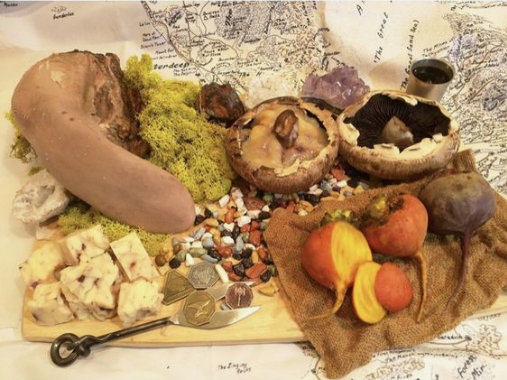

Svirfneblin
<< Home | Next >>

Description
It is important to note that this is a MEAL/PARTY Fare, and not a travel ration. This dish includes the following: Underdark radishes, mushrooms and edible mosses. Rothé tongue (cow tongue) and rothé cheeses, which are made with wine to be eaten on the side as well as in plain varieties that can be melted into the mushroom caps.
Ingredients
- Underdark radishes
- Underdark mushrooms
- Underdark mosses (edible)
- Rothé Tongue
- Rothé Cheeses
- Underdark beets
Steps
- Prepare the Rothé tongue by thoroughly cleaning it with salt. Then, let it boil in distilled water for at least fifteen minutes or until the tongue is no longer pink. Take it out with a wooden tongue and skin the outer layer of the tongue. Leave to the side.
- Wash mushrooms and soak the edible mosses in water- be cautious, this is at your own risk- and remove any flakes of dirt.
- Skewer the mushroom and cook slowly over a fire. In the meantime, prepare the beet by boiling it in a pot, while cutting the Rothé tongue into thin slices.
- Don't forget the wine!